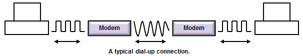

<div id="jsn-maincontent" class="span9 order1 row-fluid">
  <div id="jsn-maincontent_inner">
    <div id="jsn-centercol">
      <div id="jsn-centercol_inner">
        <div id="jsn-mainbody-content" class="jsn-hasmainbody">
          <div id="jsn-mainbody-content-inner1">
            <div id="jsn-mainbody-content-inner2">
              <div id="jsn-mainbody-content-inner3">
                <div id="jsn-mainbody-content-inner4" class="row-fluid">
                  <div id="jsn-mainbody-content-inner" class="span12 order1">
                    <div id="jsn-mainbody">
                      <div id="system-message-container"></div>

                      <div
                        class="item-page"
                        itemscope
                        itemtype="https://schema.org/Article"
                      >
                        <meta itemprop="inLanguage" content="en-GB" />

                        <div itemprop="articleBody">
                          <p></p>
                          <h1 style="text-align: center">
                            Connecting to the Internet
                          </h1>
                          <p>
                            <strong>Introduction</strong><br />If you want to
                            connect a single computer or a network to the
                            Internet then you need to use some specialised
                            equipment. There are a number of choices, including
                            a modem, a broadband modem, a broadband router and a
                            wireless broadband router (although there are other
                            pieces of equipment you can use).
                          </p>

                          <p>
                            
                          </p>
                          <p>
                            <strong>Bandwidth</strong><br />Before we look at
                            different pieces of equipment to connect to the
                            Internet, there is one important word to take note
                            of here: 'bandwidth'.
                          </p>
                          <p>
                            Bandwidth refers to the volume of data that can be
                            sent or received in one second. The higher the
                            bandwidth, the more data you can send in any second.
                            This is very important because some devices can
                            handle a higher bandwidth than others. If you are
                            using a broadband modem (see below), for example,
                            that has a higher bandwidth compared to a dial-up
                            modem (see below) and you won't be waiting too long
                            for a film to download, perhaps a few minutes at
                            most. A dial-up modem, on the other hand, uses a low
                            bandwidth and a film might take many hours to
                            download.
                          </p>
                          <p>
                            Bandwidth can be given as a frequency (e.g. 4 KHz)
                            which tells you the range of frequencies that can be
                            used. It can also be given as a transmission rate,
                            in bits per second (e.g. 56 kbps)
                          </p>
                          <p>
                            <strong
                              >Modem (also called a 'dial-up modem')</strong
                            ><br />This is a piece of equipment used for sending
                            and receiving data from one computer to another
                            computer using the existing phone network.
                          </p>
                          <p>
                            
                          </p>
                          <p>
                            A modem works by taking the packets of data (which
                            are digital signals) from a computer and converting
                            them into analogue signals, which the phone network
                            uses. The analogue signals then pass along the phone
                            network from computer to computer, from network to
                            network, until the final destination is reached. At
                            the destination, another modem converts back the
                            analogue signals into the original digital ones and
                            then passes these to the destination computer.
                          </p>
                          <p>
                            <strong
                              >Advantages and disadvantages of modems</strong
                            ><br />In this way, the existing, widespread phone
                            network, which only uses analogue signals, can be
                            used by computers, which are digital devices. On the
                            other hand, modems cannot send large volumes of data
                            at once. They are therefore of little use when
                            streaming files, and the time taken to download
                            files such as music or films may make them
                            frustrating. In addition, the phone line, just like
                            making a phone call, is engaged whilst the modem is
                            in use. This is why it is also known as a 'dial-up'
                            modem; you have to dial up the phone number provided
                            by your Internet Service Provider (ISP) to make a
                            connection to the Internet and all the time you are
                            on the phone using the Internet, your phone cannot
                            be used for other things, such as making and
                            receiving phone calls or sending faxes.
                          </p>
                          <p>
                            <strong>Broadband modem</strong><br />For many
                            years, most homes used dial-up modems but as we have
                            seen, these are slow and you cannot use your phone
                            line for making or receiving phone calls whilst you
                            are connected to the Internet. As technology
                            advanced, many homes and businesses now make use of
                            broadband modems. These pieces of equipment work in
                            much the same way as dial-up modems, connecting to
                            your phone line, converting digital signals into
                            analogue signals and back again. However, they make
                            use of a much wider range of frequencies than
                            dial-up modems. Some of those frequencies can be
                            used for the Internet but crucially, the frequencies
                            that we use for speaking can be reserved for
                            speaking. This means that we can now use both the
                            Internet and make and receive phone calls at the
                            same time.
                          </p>
                          <p>
                            One thing to note about broadband modems - they are
                            designed to allow you to connect only one computer
                            to your broadband connection. For many homes and
                            businesses these days, that is a problem, as they
                            have many devices that need to access the Internet!
                          </p>
                          <p>
                            <strong>Broadband router</strong><br />Another piece
                            of equipment in wide use is a 'broadband router'.
                            This piece of equipment combines a broadband modem
                            with a switch, so that you can connect not one
                            computer but many computers or a whole network to
                            your broadband connection. The router usually has an
                            'Admin' area. You can log in to this area using a
                            login and password and set up the router and any
                            security features, such as a 'firewall'. This is a
                            piece of software that stops unauthorised users
                            getting access to the network.
                          </p>
                          <p>
                            <strong>Wireless broadband router</strong><br />If
                            it weren't enough to have broadband routers, it is
                            very common to find 'wireless broadband routers' in
                            homes and businesses today. These work in the same
                            way as a broadband router but you can connect
                            devices wirelessly to the router as well as
                            physically, using cables. That means that those
                            wireless devices can also use the broadband
                            connection to access the Internet.
                          </p>
                          <p>
                            Using wireless broadband router software, you can
                            login using the administrator's login and password
                            and set up the firewall. You can also set up the
                            wireless security features that are commonly found.
                            There are two features you are likely to find:
                          </p>
                          <p>
                            A password. You set up a password for wireless
                            users. That means that anyone with a wireless device
                            has to enter the correct password into their device
                            before they can get access to the Internet
                            connection.<br />
                            MAC addresses. Allowable MAC addresses are entered
                            into a table. Every device that can connect to the
                            Internet has a MAC (Media Access Control) address.
                            If you put the addresses of only the devices you
                            want to allow to make a connection, then any device
                            with a MAC address not in this table will not be
                            allowed access to the Internet connection.
                          </p>
                          <p>
                            It is always a good idea to prevent unauthorised
                            users from getting access to your network. One
                            reason is they might be up to no good. The second
                            reason is they might be downloading large files,
                            which could slow your own use of the Internet down
                            or even cost you money if you are paying for how
                            much data is downloaded.<strong>&nbsp;</strong>
                          </p>
                          <p>
                            <strong>Leased line (dedicated line)<br /></strong
                            >An alternative to a dial-up connection is a leased
                            line connection. In this type of connection, you pay
                            a fixed fee for a permanent&nbsp;Internet
                            connection. You have access to the Internet 24 hours
                            a day. You do not need to dial-up a phone number
                            because you&nbsp;are always connected! Modems used
                            in dial-up connections work at speeds of up to 56
                            Kbytes. This may be fine for light&nbsp;Internet
                            use. However, leased lines typically give much
                            higher bandwidths and this may be necessary if there
                            is heavy use in&nbsp;the office by a lot of people
                            or use involving large multimedia files.
                          </p>
                          <p><strong>&nbsp;</strong></p>
                        </div>
                      </div>
                    </div>
                  </div>
                </div>
              </div>
            </div>
          </div>
        </div>
      </div>
    </div>
  </div>
</div>
